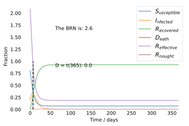

Assignment 1
The following document provides our solutions for the given exercises. This code is based on prior work conducted by Jan Nagler; the modications made were effectuated in order to solve the following exercise problems:
a. Derive the corresponding system of equations for S, I, R and D. E.g., \(\frac{dD}{dt} = \mu I\) but this is not the only difference to SIR. In addition, the basic reproduction number may now depend on µ as well, how?
b. Assume that the basic reproduction number \(R_0\) for B.1.1.7 is not exactly known but only the range \(R_0 \in [3.0; 4.0]\). Assume that the mortality rate µ is also not exactly known but only the range \(\mu \in [0.4\%; 4\%]\). Study how these parameter uncertainties affect the prediction of D at t = 365d.
c. Study numerically the effects of a hard versus soft lockdown (by two for you reasonable values of β), in terms of D(365d). Assume µ = 1% and a γ compatible with \(R_0\) = 4.
We will start by importing some packages that can be leveraged when solving the exercise problems.
#### Imports ####
import numpy as np
import pandas as pd
import math
from scipy.integrate import odeint
import matplotlib.pyplot as plt
from IPython.display import display, Markdown
# set matplotlib to inline
%matplotlib inline
Next, let us identify the assignment prerequistes, namely the population size and its initial conditions. \(N\) represents population size, \(I_0\) is the total number of infected people at time zero, \(R_0\) is the total number of recovered people from the illness, and \(D_0\) is the death at time zero.
# Population size
N = 84e7
# Initial conditions: 1 Infected, no Recovered individuals
I0, R0, D0 = 100, 0, 0 #case zero
In order to use the \(SIR(D)\) Model, we also need to calculate \(S_0\), which is the number of susceptible persons. We can calculate this using the predefined values of \(N\), \(I_0\), \(D_0\) and \(R_0\).
# All others, S=N-I-R susceptible, initially S0=N-I0-R0
S0 = N - I0 - R0 - D0 #normalization
Additionally, in order to calculate how the pertinent variables fluctuate over time, we must define an initial contact rate, a recovery rate and the mortility rate. Let \(\beta\) represent the contact rate, \(\gamma\) the recovery rate, and \(\mu\) the mortality rate.
# Contact rate, beta; recovery rate, gamma; mortility rate, mu
beta, gamma, mu = 0.8, 0.15, 0.05
The basic reproduction number \(R_0\) (pronounced R-nought) is the average number of cases directly generated by one case in a population where all individuals are susceptible to infection [1]. It is calculated by dividing the contact rate through the recovery rate.
R_nought = beta / (gamma + mu)
# for further information see here: https://www.sciencedirect.com/topics/medicine-and-dentistry/basic-reproduction-number
In order to model the different things over time, we need to create a time variable \(t\).
# A grid of time points (in days)
t = np.linspace(0, 365, 365)
Next we can set up the \(SIR(D)\) model. For the most part this is the function developed by Jan Nagler, albeit with some modifications that allow us to incorperate the mortility rate \(\mu\).
# SIRD model (coupled nonlinear system of ODEs)
def deriv(y, t, N, beta, gamma, mu):
"""Altered function for the SIRD."""
S, I, R, D = y
# dSdt = - contact rate * the susceptibles * infected / total population
# How many of the population is susceptible to the virus?
dSdt = -beta * S * I / N
# dIdt = contact rate * susceptibles * infected / total population - recovery rate * infected
# How many of the susceptibles will contract the virus?
dIdt = beta * S * I / N - gamma * I - mu * I
# dRdt = recovery rate * infected
# How many of those that are infected recover excluded those that die?
dRdt = gamma * I
# dDdt = mortility rate * infected
# How many of those that are infected will die?
dDdt = mu * I
return dSdt, dIdt, dRdt, dDdt
In order to continue we need to set up an initial conditions vector; this is then used in the odeint() function.
# Initial conditions vector
y0 = S0, I0, R0, D0
Now, we will make use of the aforementioned odeint() function, which integrates a system of ordinary differential equations [2]. The first argument for this function must be therefore a callable object, such as a function (e.g. a callable object is everything which can be called using ()). Its second argument is the vector with the initial conditions, in our case the y0 defined above. Third, we have to specify the time variable; this was also done above (\(t\)). In order to pass the function arguments to our given callable, we also need to specify the argument args with all the inputs the callable needs.
# Integrate the SIR equations over the time grid, t.
ret = odeint(deriv, y0, t, args=(N, beta, gamma, mu))
The object ret now contains all the integrated differential equations. In order to use them correctly, we need to transpose them. By doing so we are able to extract the different values for our equations.
S, I, R, D = ret.T # return vector
Yet another very important number when it comes to epidemiology is the effective reproduction number, which will be denoted by \(R_{effective}\). The idea behind this number is that at any given time \(t\) an unknown number of the susceptible population is immune to the disease, or the average number of new infections caused by a single infected individual at time t in the partially susceptible population [3, 4]. As soon as this number drops below one, one can speak of herd immunity. Thus \(R_e\) can be defined by \(R_0 * \frac{susceptibles}{population}\).
For our model, we can calculate this using the following loop.
t_1 = 0
for time in range(0,len(S)):
if R_nought*S[time]/N < 1:
t_1 = time
break
display(Markdown(rf"$R_e$ = 1 after {t_1} days"))
Class development¶
As shown above, a number of variables and functions are needed to solve the exercises problems. In the next cell, we will define a class that incorporates said variables/functions. The advantage of using a class is that we can easily change a given parameter and readily see/understand how doing so impacts the other parameters at play.
class SIRD:
"""This class incorporates the SIRD model"""
def __init__(self, N: int, I0: float, R0: float, D0: float, beta: float, gamma: float, mu: float, days: int):
self.N = N
self.S0 = N - I0 - R0 - D0
self.I0 = I0
self.R0 = R0
self.D0 = D0
self.beta = beta
self.gamma = gamma
self.mu = mu
self.R_nought = beta / (gamma + mu)
self.t = np.linspace(0, days, days)
def _deriv(self, y, t, N, beta, gamma, mu):
"""Altered function for the SIRD.
"""
S, I, R, D = y
# dSdt = - contact rate * the susceptibles * infected / total population
# How many of the population is susceptible to the virus?
dSdt = -beta * S * I / N
# dIdt = contact rate * susceptibles * infected / total population - recovery rate * infected -
# mortality rate * infected
# How many of the susceptibles will contract the virus?
dIdt = beta * S * I / N - gamma * I - mu * I
# dRdt = recovery rate * infected
# How many of those that are infected recover excluded those that die?
dRdt = gamma * I
# dDdt = mortility rate * infected
# How many of those that are infected will die?
dDdt = mu * I
return dSdt, dIdt, dRdt, dDdt
def _R_effective(self, subplot = False):
self.t_1 = 0
for time in range(0,len(self.S)):
if self.R_nought*self.S[time]/self.N < 1:
self.t_1 = time
break
if not subplot:
display(Markdown(rf"$R_e$ = 1 after {self.t_1} days!"))
def _ode(self):
y0 = self.S0, self.I0, self.R0, self.D0
ret = odeint(self._deriv, y0, self.t, args=(self.N, self.beta, self.gamma, self.mu))
self.S, self.I, self.R, self.D = ret.T
def plot(self, subplot = False):
self._ode()
self._R_effective(subplot)
fig = plt.figure(facecolor='w')
ax = fig.add_subplot(111, axisbelow=True)
ax.plot(self.t, self.S/self.N, alpha=0.5, lw=2, label='$S_{usceptible}$')
ax.plot(self.t, self.I/self.N, alpha=0.5, lw=2, label='$I_{nfected}$')
ax.plot(self.t, self.R/self.N, alpha=0.5, lw=2, label='$R_{ecovered}$')
ax.plot(self.t, self.D/self.N, alpha=0.5, lw=2, label='$D_{eath}$')
ax.plot(self.t, self.R_nought*self.S/self.N, alpha=0.5, lw=2, label='$R_{effective}$')
ax.plot(self.t, np.full(len(self.t), self.R_nought), alpha=0.5, lw=2, label='$R_{nought}$')
ax.set_xlabel('Time / days')
ax.set_ylabel('Fraction')
ax.set_ylim(0,2.2)
ax.vlines(self.t_1, 0, 1, colors='k', linestyles='dashed')
ax.yaxis.set_tick_params(length=0)
ax.xaxis.set_tick_params(length=0)
ax.grid(b=True, which='major', c='w', lw=2, ls='-')
legend = ax.legend(fontsize="large", loc = "upper right")
legend.get_frame().set_alpha(0.5)
plt.text(0.2, 0.75, f"The BRN is: {round(self.R_nought,2)}",
transform=ax.transAxes)
plt.text(0.2, 0.4, f"D = t(365): {round(self.D[-1],2)}",
transform=ax.transAxes)
for spine in ('top', 'right', 'bottom', 'left'):
ax.spines[spine].set_visible(False)
if subplot:
x = list(map(lambda x: plt.gca().lines[x].get_xdata(), range(5)))
y = list(map(lambda x: plt.gca().lines[x].get_ydata(), range(5)))
lines, labels = ax.get_legend_handles_labels()
plt.close()
return x, y, lines, labels
else:
plt.show()
def subplots(self, variable_to_test: str, test: range, subplot_title: str):
f, axs = plt.subplots(1, len(test), sharey = True, figsize=(15,7))
resetter = getattr(self, variable_to_test)
for k,v in enumerate(test):
setattr(self, variable_to_test, v)
model = SIRD(self.N, self.I0, self.R0, self.D0, self.beta, self.gamma, self.mu, len(self.t))
x, y, lines, labels = model.plot(subplot = True)
for j in range(len(x)):
axs[k].plot(x[j], y[j])
axs[k].set_title(f"{subplot_title}: {v}")
plt.text(0.2, 0.4, f"D = t(365): {round(model.D[-1],2)}",
transform=axs[k].transAxes)
plt.text(0.2, 0.75, f"The BRN is: {round(model.R_nought,2)}",
transform=axs[k].transAxes)
f.legend(lines, labels, loc = 'upper right', fontsize="large", facecolor= "white")
setattr(self, variable_to_test, resetter)
model = SIRD(N = 1, I0 = 0.2, R0 = 0, D0 = 0,
beta = 0.39, gamma = 0.15, mu = 0,
days= 365)
model.plot()
$R_e$ = 1 after 7 days!
model.subplots("mu", list(map(lambda x: x/10.0, range(0, 125, 25))), "$\mu$")
plt.suptitle("The impact on the BRN using different mortality rates", fontsize = 30)
plt.savefig("Impact from the mortality rate on BRN.png")
plt.show()
Question 1:a¶
The model exibited by the above graphs uses a gamma (meaning the recovery rate) of 0.15. This is an important part of the equation used to determine the Basic Reproduction Number (BRN), also referred to as “R Nought”. Essentially, the BRN indicates how many individuals an infected person is likely to pass the virus onto during the course of his/her infection. As the recovery rate consitutes part of the denominator in this equation, increasing the recovery rate will decrease the virus’s BNR. The second component of the denominator to calculate the BRN is the virus’s mortality rate, represented by mu. Why should this variable be accounted for when calculating the BRN? Well that’s because when someone dies he/she will no longer pass on the infection, i.e. in terms of their “infectious potential” they are treated the same as someone who had the virus and then recovered. Accordingly, just as with the recovery rate, increases to the mortality rate will decrease the BRN.
Note: Treating a cadaver as having no infectious potential may be erroneous, but considering how one might incorporate this the infectious potential of deceased individuals is beyond the scope of this assignment. Our model is also limited by the fact that the mortality rate does not account for natural deaths, assuming simply that all deaths were a result of the virus.
R_nought = [3.0,4.0]
mu = [0.004, 0.04]
beta = []
f, axs = plt.subplots(1, 4, figsize=(15,7))
i = 1
for mortality_rate in mu:
for basic_repr_nr in R_nought:
model.beta = basic_repr_nr*(model.gamma + mortality_rate)
model.mu = mortality_rate
x, y, lines, labels = model.plot(subplot = True)
for j in range(len(x)):
axs[i-1].plot(x[j], y[j])
axs[i-1].set_title(rf"$\beta$: {round(model.beta, 2)}, $\mu$: {model.mu}")
plt.text(0.2, 0.4, f"D = t(365): {round(model.D[-1],2)}",
transform=axs[i-1].transAxes)
f.legend(lines, labels, loc = 'upper right', fontsize="large", facecolor= "white")
i += 1
plt.suptitle("The impact on deaths using different $R_0$s & $\mu$s", fontsize = 30)
plt.savefig("Impact from BRN & Mu on deaths.png")
plt.show()
Question 1:b
¶
TO DO: Incorporate/use Sebastian’s plot.
The graphs above illustrate how increases in either the virus’s BRN or its mortality rate will result in a greater cumulative number of deaths that occur over a one-year period. Of these two variables, increases in the mortality rate will have a more profound impact on the ensuing deaths.
model.mu = 0.01
model.R_nought = 4
beta = [.25, .5, .75][::-1]
f, axs = plt.subplots(1, 4, figsize=(15,7))
i = 1
for infection_rate in beta:
model.gamma = (infection_rate/model.R_nought) - model.mu
x, y, lines, labels = model.plot(subplot = True)
for j in range(len(x)):
axs[i-1].plot(x[j], y[j])
axs[i-1].set_title(rf"$\beta$: {infection_rate}")
plt.text(0.2, 0.4, f"D = t(365): {round(model.D[-1],2)}",
transform=axs[i-1].transAxes)
f.legend(lines, labels, loc = 'upper right', fontsize="large", facecolor= "white")
i += 1
plt.suptitle("The impact of a soft vs. a hard lockdown!", fontsize = 30)
plt.savefig("Impact of contact restrictions.png")
plt.show()
Question 1:c
¶
For a hard lockdown the beta should be lower, and vice versa.
April 13 Meeting: We are forgoing this question for the time being, and will return to it on April the 15th.
Question 1:(b,c)
¶
Yes, you can derive and plot the effective reproduction number, R, as a function of time, given otherwise fixed parameters. Indeed doing just that is the purpose of the _R_effective() function defined above.